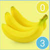

INGRESAR
atras
NEVERA
atras
AÑADIR
atras
AGREGAR
atras
BORRAR
atras
RECETARIO
atras
MOSTRAR
Back
Receta
Back
Receta
Back
Receta
Usuario
Constrasenia
INGRESAR
Añadir
Nevera
Recetario
Borrar
Tipo
Verduras
Frutas
Carne
Nombre
Cantidad
Fecha
Agregar
Tomate
Queso

Platano
Lechuga
Leche
Carne
ESCOGER
Tallarin con pollo
Chaufa
Biste
Chicharron
Mostrar
TALLARIN CON POLLO
Sazonar las presas de pollo con sal y pimienta, Poner aceite en una olla pequeña y cocinar los tomates picados añadiéndoles el azúcar y un poquito de sal. Aparte picar muy finamente la cebolla. Cuando el tomate ya haya cocinado licuarlos y pasarlos por una coladera para sacar las pepas. En otro recipiente cocinar la zanahoria con un chorrito de agua y sal durante 10 minutos hasta que se forme una pasta cremosa. Poner aceite en una olla y cocinar las “presas de pollo”, solo hasta que estén doraditas. Quitar de la olla y en ese mismo aceite freír la cebolla y los ajos luego añadir el pollo, la zanahoria también el tomate, el laurel y los hongos, probar la sal, y dejar cocinar la salsa hasta que el pollo esté bien cocido. Cocinar en una olla con agua y un poco de sal los fideos que se calcula un puñado para cada comensal unos 10 minutos. Escurrir el agua y servirlos con el pollo y la salsa encima. No olvidar espolvorear el queso parmesano y ya está listo.
.jpg)